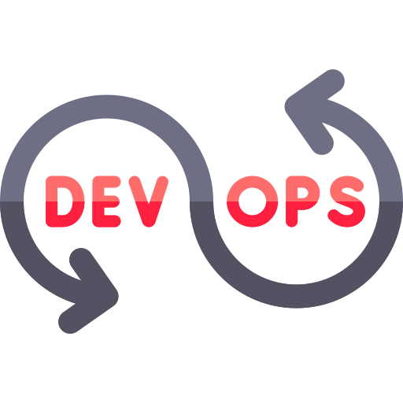
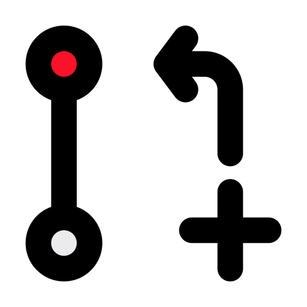

📰 Blog Posts
10 Ansible Tricks for Seamless Automation
📅 June 18, 2025 · 🏷️ Ansible, Automation · ⏱️ 3 min read
Boost your automation workflows with these clever tips.
CI/CD with GitHub Actions: A Hands-On Guide
📅 June 22, 2025 · 🏷️ CI/CD, GitHub Actions · ⏱️ 4 min read
Build modern delivery pipelines from scratch.
Auto-Sync Git Submodules with GitHub Actions
📅 June 25, 2025 · 🏷️ Git, Submodules · ⏱️ 2 min read
Automate submodule syncing without breaking your builds.
How I Patched a Docker Image Without Breaking Its Original Behavior
📅 July 1, 2025 · 🏷️ Docker, Containers · ⏱️ 5 min read
Use safe overrides to patch base Docker images.
🌟 Featured
DevOps: The Invisible Force Behind Seamless Tech
📅 July 7, 2025 · 🏷️ DevOps, Culture · ⏱️ 4 min read
Explore how DevOps silently powers your digital experiences.

Changing the Default Branch Name in GitHub
📅 July 14, 2025 · 🏷️ GitHub, Git · ⏱️ 2 min read
A step-by-step guide to renaming the default branch safely.

DevOps Roadmap Mindmap
📅 August 02, 2025 · 🏷️ GitHub, Git · ⏱️ 5 min read
A single-page HTML showcasing a DevOps roadmap as an interactive expanding mindmap where clicking nodes will expand subtopics.

Real Hinduism
📅 August 06, 2025 · 🏷️ GitHub, Git · ⏱️ ♾️ min read
Dedicated to spreading authentic knowledge of Sanatana Dharma.